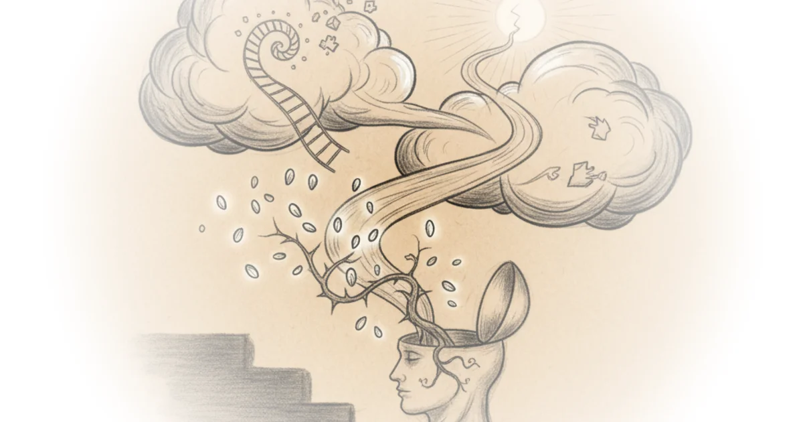

This piece cuts through a decade of noise to challenge a dangerous assumption: that the safest choice for a pregnant person is to stop taking medication. Two Truths reframes the entire debate from a fear of drugs to a calculus of untreated illness, introducing the medical concept of "maternal euthymia"—a stable mood—as the true North Star for care. In an era where public health messaging often defaults to cautionary tales, this report offers a data-driven counter-narrative that could literally save lives by correcting a massive information gap.
Reframing the Risk
The article's most striking move is shifting the focus from the medication to the condition itself. Two Truths reports that the prevailing conversation has been dominated by "fear-mongering around medication," often ignoring the biological reality that untreated depression carries its own severe risks for the fetus. The piece argues that we must weigh the well-studied safety of Selective Serotonin Reuptake Inhibitors (SSRIs) against the documented dangers of untreated anxiety and depression.

Dr. Anita H. Clayton, a reproductive psychiatrist quoted in the report, drives this point home with clarity: "When we bring that question into the equation, it becomes clear that being exposed to depression during pregnancy is more problematic for the fetus than being exposed to an SSRI that's working." This reframing is critical because it dismantles the false dichotomy many patients face. The report highlights that stopping medication is not a neutral act; it is a high-risk decision. Citing a 2006 study, the piece notes that among women with a history of depression, 68% who stopped their meds saw their symptoms return, compared to only 26% who stayed on them.
"Risk means probability, not certainty."
Dr. Sarah Oreck, another expert featured, uses a powerful analogy to help patients navigate this statistical reality. She compares taking an SSRI to driving a car: "The same way getting in a car carries a risk of an accident without meaning you will get in one, taking an SSRI during pregnancy carries certain statistical risks without meaning those outcomes will happen to you or your baby." This is a vital distinction in medical communication, yet it is often lost in headlines that prioritize rare adverse events over common, devastating outcomes of untreated illness.
The Legacy of Flawed Warnings
Why, then, does the fear persist? Two Truths digs into the institutional history of the Food and Drug Administration (FDA) and the medical community's reaction to it. The piece points out that hesitation often stems from outdated data and a lack of specialized training among general practitioners. Specifically, the report addresses a 2005 FDA warning regarding the SSRI Paxil and heart malformations, which spread fear despite later research proving the initial studies were flawed.
Dr. Clayton explains the error: early studies "compared women on SSRIs to healthy women without depression, rather than to depressed women who weren't taking medications." A massive study of nearly 950,000 pregnancies later corrected this, finding no significant increase in heart defects. Yet, as the article notes, "The FDA warning remains on Paxil's label to this day, which continues to drive unnecessary fear among women and providers." This is a stark example of how a single regulatory misstep can echo for nearly two decades, creating a barrier to care that evidence has long since cleared.
Critics might argue that the medical establishment should be more conservative, prioritizing the absolute avoidance of any potential risk during pregnancy. However, the piece effectively counters this by highlighting the "snowballing" nature of untreated mental health conditions, which can impair attachment and increase the risk of postpartum depression for the entire family system. Dr. Oreck notes that this is "a family systems issue—one that ripples outward in ways that are often underestimated, from challenges with returning to work to an estimated economic cost of $14 billion."
The Gap in Training and Trust
The report also exposes a structural failure in how obstetricians are trained. Two Truths observes that while the American College of Obstetricians and Gynecologists (ACOG) recommends screening for mental health, "maternal mental health is not a part of the national curriculum for OB/GYN residents." This educational gap, combined with high malpractice premiums, creates an environment where doctors may default to advising patients to stop medication rather than managing complex psychiatric care.
Dr. Catherine Birndorf, co-founder of The Motherhood Center, offers a candid assessment of the field's status: "Psychiatry has always been the black sheep of medicine." She argues that society often views psychiatric medication as "optional" while viewing medication for physical health as necessary. This bias, the piece suggests, is compounded by a historical lack of research on women; it wasn't until 1993 that women were required to be included in federally funded clinical trials. The article connects this historical exclusion to the current "Pregnancy Evidence Project" by Zenith, which aims to gather real-world data to fill the void left by decades of exclusion.
The solution proposed is not blind trust in a single provider, but active partnership. Dr. Birndorf advises patients to bring data to their appointments and ask for collaboration: "You want a partnership with your provider. You want to be able to talk about things. You want to be able to say, 'I'm worried about going off my meds.'" This call for agency is the piece's most empowering takeaway, urging readers to demand the "good conversation" necessary for a "good decision."
Bottom Line
The strongest part of this argument is its rigorous dismantling of the "safety first" narrative that actually endangers mothers and babies by ignoring the risks of untreated illness. Its biggest vulnerability lies in the systemic inertia of the FDA and medical training, which may take years to correct despite the clarity of the evidence. Readers should watch for how the "Pregnancy Evidence Project" and similar data-driven initiatives can finally update the regulatory labels that currently drive this fear.
"Almost all of our medications are considered relatively safe in pregnancy."
Two Truths delivers a necessary corrective to a public discourse paralyzed by outdated warnings, proving that the most dangerous choice is often the one made out of fear rather than facts.